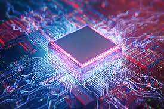
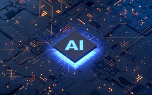

A computer is a machine that is capable to performing different tasks quickly and efficiently. They have revolutionarized our daily lives. But the idea to invent such an advanced and useful machine dates a long time back. A computer's fundamental workings, its history and its future will be the motive of this website.
A computer is an electronic device that receives commands from the user, interprets them and gives out the desired results. It sounds quite easy, but the inside the computer, these coomands travel in the form of electrical signals which get encoded into a language which can be easily interepeted by the computer (binary language) as it cannot understand our normal day to day language. The binary language is based on mathematical principles which guides the transmission of electrical signals.
Well, the internal composition of computer parts is quite complex (like microprocessors, transistors, logic gates, registers etc.). Now comes the role of Artificial Intelligence(AI). AI basically means the simulation of human like intelligence into machines so that they are capable of doing tasks that humans can do. The fields of AI and computer science are quite inter-related to each other as humans want to develop human like intelligence in computer based machines.
The main advancements in the AI field were conducted during the Cold War era. Major trials were conducted by USA and USSR in order to show superiority to each other. Major trial was of the Machine translation in 1966. USA was keen in seeing and in interpreting the scientific and secretive reports of USSR. Hence, USA develop a sort of prototype of their first Automated Language translator. The work on the project began in the year 1954.
There were major drawbacks on the development of the AI field :-
Drawbacks:-
And the machines that were used to run the LISP software were called LISP machines.'*
But archaeological surveys show that the first evidences of AI were seen in the Early Greek periods. In 10th century Greece, Didrachma, Greece's currency at that time, had the Talos imprinted. Talos was basically a giant automaton made of bronze to protect Europa in Crete from pirates and invaders. He circled the island's shores three times daily.

Before jumping into AI, we need to know some basic amthematical and scientific funadamentals.
Mathematical principles:- These include the basics of boolean algebra which is also called algebra of logic. Boolean algebra is basically based on some fundamental mathematical topics like Sets, Relations and Functions, Permutation and Combinations, etc. Boolean algebra includes certain operators like AND, OR and Nor operator. Based on these operators, we have various laws which define the circutary system of machine. Some of these laws are Indempotence law, Complementary law, identity law, Additorial and multiplicatory law, negation law, etc. These laws tell us how an electrical signal travels in an machine circutary system.
Scientic Fundamentals:- These generally tell us various routes an electrical signal takes up based on boolean algebra. These give us account of transistors and logic gates and microprocessor and other communication devices used in the computer system. A transistor is basically a switch made up of an negatively and positively charged electrolytes that conduct electricity based on the coding in binary digits by the basis of Boolean algebra. These transistors are connected togather to form small circuits called logic gates. These logic gates conduct different voltages of electrical energy based on the binary code of the information given as input.
Gaming:- In video games, artificial intelligence (AI) is used to generate responsive, adaptive or intelligent behaviors primarily in non-player characters (NPCs) similar to human-like intelligence.
Natural language policy:- Natural language processing (NLP) is a subfield of linguistics, computer science, and artificial intelligence concerned with the interactions between computers and human language, in particular how to program computers to process and analyze large amounts of natural language data.
Vision and Speech accessibility:- AI is being widely used in creating accessibility for disables. Apart from vision and speech recognition, other accessibilities like voice recognition and touch sensivities are also developed.
AI is widely used in cosmic industry. It is being used as Astronaut assistants. These are robotic devices that help in the daily operations done by an astronaut during space trips. AI is also used in Mission design and planning. Space plans and programs are being decided with the help of AI. For maintaining a stability of communications during space programs, Satellite data processing and management is quite important and AI plays a dominant rule in it by managing huge amounts of Datas and managing Navigation systems of the main base so that connection with the traveller(spacecraft) is maintained.
One of the biggest space challenges of the 21st century is how to tackle space debris. According to ESA, there are nearly 34,000 objects bigger than 10cm which pose serious threats to existing space infrastructure. There are some innovative approaches to deal with the menace, such as designing satellites to re-enter Earth’s atmosphere if they are deployed within the low Earth orbit region making them disintegrate completely in a controlled way.
AI has significant role in various fields. One such field is Cyber security. It is the protection of computer systems and networks from information disclosure, theft of or damage to their hardware, software, or electronic data, as well as from the disruption or misdirection of the services they provide. AI played a significant role in development of the network securities and made it stronger and stronger. But as something new is invented, its opposite are always being made first. To destroy Network security, Softwares like viruses, spywares, trojan horses are developed. A malicious software is injected into a computer system by a link or some unknown file. A user unknowingly clicks the link and the software starts to replicate its malicious files into the system. And start extracting all the user data associated with the system. But due to awareness among people, users generally don't click these malicious links.

Due to awareness, hackers and penetrators developed softwares which are capable of penetrating computer systems without letting the user know. These softwares are called advanced malicious softwares. These softwares are developed from advanced AI. One of these being a spyware. A Spyware is software with malicious behavior that aims to gather information about a person or organization and send it to another entity in a way that harms the user.One such spyware is developed by an Israeli Cyber group NSO which is called Pegasus.
This spyware is so strong that it enters a device without the user knowing about it. It was basically developed in order to curb terrorism and rebellion groups by secretly seeking their internal informations. NSO only sells this software to the national governments. But from 2019, misuse of Pegasus software is on trending. Some government officials are misusing this to gather informations from the rival leaders. And as a result world is in threads and is doubting the credibility of the security offered by AI. Despite having huge exponential curves, AI also has these dark spaces which are often ignored and treated as small. But this small yet delicate issue is a big concern. AI is evolving but it should do in a proper organised manner under strict supervision.
Till now we have got to know how important is AI in todays world. Initially invented to spy each other, AI has contributed a lot in our day to day life in a positive way. There are negative impacts of Ai too like problems such as Dehumanization and Mechanisation of the world which means machines would rake over humans. But these impacts could be prevented if we use AI in a proper and systematic way. Also, a lot of countires are relating AI in the weoponaries especially in upgrading nuclear power which include Atomic and hydrogen bombs which is an ultimate end to humanity.
Despite having huge negative impacts, AI has played significant role in development of computers at quantum level. The developmments are still in progress to develop Quantum computers. A quantum computer takes inputs as qubits which can take two values 0 and 1 simultaneously and either values too. Combinations of these inputs results in high Storage capacity and very fast speed to process data. Quantum computers are of great importance. By these computers, we could dive in the realities of cosmos and Earth's inner mysteries by real time simulations at a massive levels.